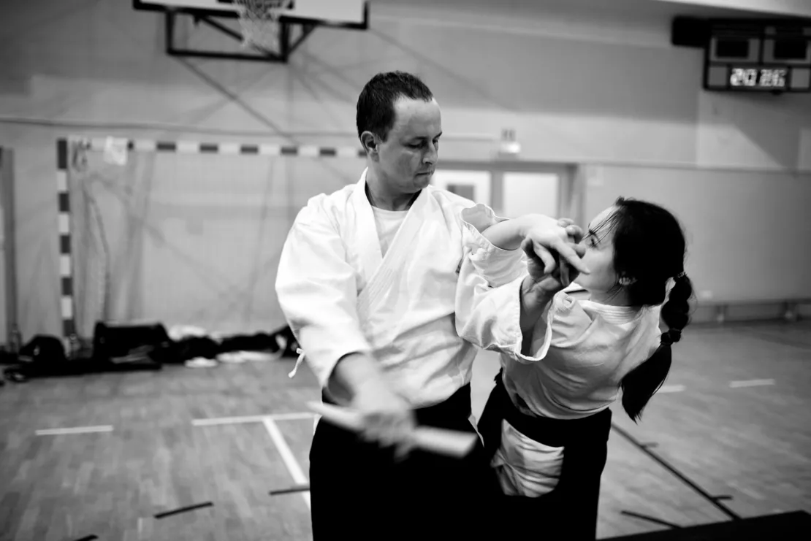

Aikido to japońska sztuka walki, która polega na zapobieganiu i przeciwdziałaniu atakom przeciwnika przy użyciu jego siły i energii.
Dorośli
Grupa dorosłych to przede wszystkim rozwój umiejętności technicznych, polegających na wykorzystaniu różnych dźwigni, rzutów i uderzeń do odparcia ataku przeciwnika.
Trening dorosłych pozwala nie tylko poprawić sprawność, ale również oderwać się od rutyny dnia codziennego, odpocząć psychicznie, obniżyć poziom stresu, rozwinąć inteligencję ruchową i poprawić świadomość własnego ciała.
Dla każdego
Aikido cieszy się popularnością wśród kobiet i mężczyzn niezależnie od wieku, siły, sprawności czy postury. Nie ma rywalizacji, każdy nosi białe kimono, zaawansowani pomagają początkującym, każdy ma własny treningowy cel.
Elementy aikido są często wykorzystywane na kursach samoobrony, lecz aikido to nie tylko samoobrona — okazuje się użyteczne na wielu płaszczyznach życia codziennego. Jest chętnie wybierane przez osoby stawiające sobie wymagające cele.

02 — Grupy i grafik
Wtorki i czwartki
Grafik treningów aikido w Pruszkowie — grupa, dzień tygodnia i godzina.
Grupa
Godzina
Dzieci młodsze8 — 10 lat · wtorki · 60 minut
—
Dzieci starsze11 — 14 lat · czwartki · 60 minut
—
Dorośliwtorki i czwartki · 100 minut
—
Dzieci · 8 — 10 lat
Treningi tej grupy to przede wszystkim zabawy ruchowe przeplecione ćwiczeniami ogólnorozwojowymi oraz podstawowymi elementami aikido.
Instruktorzy starają się, by zajęcia ruchowe kojarzyły się dziecku z przyjemnie spędzonym czasem, a zarazem podniosły jego ogólną sprawność fizyczną.
Dzieci poznają podstawowe zasady obowiązujące w sztukach walki, liczą po japońsku, uczą się dyscypliny, wytrwałości w dążeniu do celu, pracy w parach i w grupie. Poprawiają koordynację ruchową, budują pewność siebie.
Młodzież · 11 — 14 lat
Znaczącą część treningu stanowią ćwiczenia poprawiające ogólną sprawność fizyczną, uzupełnione większą ilością technik aikido oraz wybranymi elementami samoobrony.
Treningi są bardziej wymagające i zróżnicowane. Dzieci poznają podstawowe ćwiczenia z wykorzystaniem „jo” — drewnianej broni — rozwijają szybkość, wytrzymałość i koordynację.
Uczą się osiągać cel własnym wysiłkiem i systematyczną pracą. Mogą brać udział w obozach aikido, gdzie trenują pod okiem doświadczonej kadry i nawiązują przyjaźnie.
Zajęcia dwa razy w tygodniu, w roku szkolnym · pierwszy trening gratis · zapisy telefonicznie lub przed treningiem
03 — Prowadzący
Rafał Jaroszewski
Swoją drogę aikido rozpoczął w 1995 roku pod okiem instruktorów Ireneusza Kołodziejaka i Piotra Rafała w Bialskiej Sekcji Aikido. Na przestrzeni lat trenował w kilku warszawskich klubach aikido pod okiem różnych nauczycieli.
Z Warszawskim Centrum Aikido jest związany od początku powstania klubu w 2001 roku, a od 2004 roku jest instruktorem aikido. Do 2010 roku prowadził treningi w dojo na Pradze Południe, następnie w Pruszkowie.
Egzamin na stopień mistrzowski 1 dan zdał w 2003 roku przed komisją Polskiej Unii Aikido — Jacek Wysocki Shihan, Ireneusz Kołodziejak Shihan, Wiesław Chmieliński Sensei, Marcin Velinov Sensei. Egzaminy na kolejne stopnie mistrzowskie zdawał przed mistrzem Etienne Leman Shihan.
Regularnie uczestniczy w stażach prowadzonych przez nauczycieli szkoły Aikido Kobayashi i innych linii aikido, od lat bierze udział w obozach mistrza Etienne Leman oraz w klubowych szkoleniach instruktorskich.
W aikido od
1995
Stopień
5 dan — czerwiec 2024
Instruktor rekreacji ruchowej
Samoobrona, leg. 14932/2005
04 — Opłaty
Składki miesięczne i kwartalne
Wysokość składek w podziale na grupę i okres rozliczeniowy.
Miesięcznie
Kwartalnie
Dzieci
200zł
570zł
Dorośli
260zł
750zł
Pierwszy trening gratis
Przyjdź w wygodnym stroju sportowym. Zapisy telefonicznie lub przed treningiem.
05 — Dojo
Szkoła Podstawowa nr 1 im. Józefa Piłsudskiego, ul. Topolowa 10
Aikido w Pruszkowie istnieje od 2010 roku. Jesteśmy częścią Warszawskiego Centrum Aikido.
Zapisy trwają przez cały rok. Wystarczy przyjść przed treningiem i zgłosić się do prowadzącego — na pierwsze zajęcia wystarczy wygodny strój sportowy i woda.